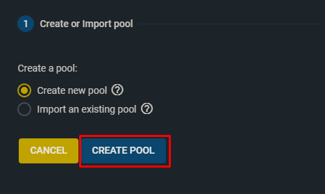

1- Nos conectaremos al cliente de FreeNAS y creamos un pool.

1- Nos conectaremos al cliente de FreeNAS y creamos un pool.
2- Pulsamos el botón ADD.
3- Pulsamos el botón CREATE POOL.
4- Le damos un nombre y seleccionamos los discos.
5- Después de crear el pool añadiremos un dataset.
6- Le damos un nombre y pulsamos el botón save.
7- Activamos los siguientes servicios.
8- Vamos al apartado Tasks -> Rsync task y pulsamos el botón ADD.
9- Seleccionamos la ruta en la que se guardarán las copias. Elegimos el usuario que ejecutará la acción Rsync. Seleccionamos el modo SSH, escribimos la dirección del servidor (preferiblemente usuario@ip) y su puerto..
10- Seleccionamos la ruta remota que contiene el contenido que queremos copiar. Seleccionamos la direction PULL y la periodicidad que uno quiera.
11- Una vez configurado pulsamos el botón SAVE y haremos la primera ejecución.